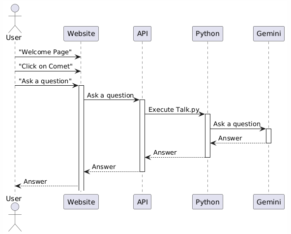
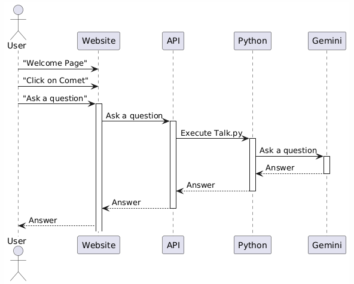

I firmly believe
that the more senior an engineer you become, the less you feel, by default, you know the best
solution. Smart people are creating new technologies, patterns, and tools every day, and if you stop
paying attention,
you may miss something that will save you some hassle. I am always looking for new technologies to
learn and new ways to solve problems.
I am a firm believer in the following quote: Unlearning. That's like, the things that I used to do five years ago that make
me
successful don't matter anymore; in fact, they can get me into trouble right now [...] I
start to get to a point where I would assess [an engineer's] ability to unlearn. After a
while, like two thirds or three quarters of what you know is still valuable, quarter to
a third is the wrong thing [...]What distinguishes great software
engineers?
Paul Luo Li, Amy J. Ko,
Andrew Begel, Empirical software engineering : an international journal, 2020-01, Vol.25
(1), p.322-352While I hope you get something of value while here, I'm surprised you're
here! This website is primarily written for Jesse. It's his playground for playing with exciting
technologies. When his curiosity is satisfied, he often moves on to something new, leaving
behind more of a "proof of concept" than finished feature. He'll eventually get back to it.
Maybe.
General areas of focus:
Enhancing my ability to build and test quality code
CI/CD w/integrated E2E testing using Github
or
Jenkins
Resilient, geographically-dispersed/load-balanced UIs in the cloud
(Azure in
my case)
Web design best practices, WCA Guidlines
(WCAG), and Web Vitals
metrics such as Largest Contentful
Paint (LCP) and Cumulative Layout Shift (CLS)
For fun:
NehsaMUD—My son and I are pursuing this project
together. It is a
text-based game/interactive novel reminiscent of a game I played in my
childhood called "MUD" - a multi-user dungeon. The MUDs I played as a
child
were pre-internet! You connected to them via a modem and played on
someone's
BBS (bulletin board system).
Runs in your browser using https & wss
Uses AI real-time image generation via Stability AI service
The navigation bar contains other technologies and tools I have experience with. Content
will be
incomplete in some subjects, as I only update content occasionally. If you see anything
valuable, something incorrect, or want more content on a specific location, comment and
let
me know!
pendingHost GraphQL server container on AWSMy only experience with AWS is simply for storage. To better
understand the platform, I will host a Docker image on AWS.
doneEvaluate AWS offerings
doneSetup account/infrastructure for the docker image
doneHost the image
stopTest
pendingComet -
the AI Dog Assistant In an effort to better understand generative AI and LLMs, I
created Comet, the AI dog assistant.
Currently, he using Google Gemini but this may change at some point. If you ask a question
via clicking on Coment, he will
send the request to Google Gemini and return the answer. The answer is then displayed in
the chat window. The end goal is to have Comet be able to
answer questions about the website, my projects, and myself - only the data I put in.
Generative AI
Generative AI is a type of AI that can generate new data
examples. It can generate new images, text, audio, and video that look like they
could have been real. Generative AI is used in many applications, including
creating deepfakes, generating new music, and creating new images.
LLM
LLM stands for Large Language Model. LLMs are a type of generative AI that
can generate new text. They are trained on a large amount of text data and can
generate new text that looks like it could have been written by a human. LLMs are
used in many applications, including generating new articles, writing code, and
creating new stories.
Google Gemini
Google Gemini is a large language model developed by Google. It is based on the
Google DeepMind architecture, a competitive AI model to OpenAI's GPT-4.
doneCreate Comet component
doneCreate API endpoint
doneCreate Python script
(talk.py) Google Gemini does not have a Rest API but does
have Python libary so the flow is:

pendingClean up interface, add
buttons for cancel
stopAbility to collapse
Comet
stopAbility to mute
Comet
stopImprove AI
bug_reportThe modal for asking
question needs much improvement:
multiple prompts can be launched
prompts launched unintentionally
Better form validation needed - empty prompts are sent for example
A design decision by Microsoft to not support decorators such as @Injectable() which are
used for dependancy injection. This is a problem because Angular uses decorators for
dependancy injection. I need to figure out how to get around this.
I will update this when I have a solution.
Error: Support for the experimental syntax 'decorators-legacy' isn't currently
enabled
doneCreate
navigation system
doneCreate Nav bar
doneEnsure it works in all device
sizes
doneIndicate selected page once a
page is clicked
pendingTiny Panel
StoriesI had an idea to create a series of random stories that fit in
tiny panels. The first one I wrote is a rivetting tale titled, "Timothée Goes On An
Adventure." I plan to continue having additional adventures and mishaps with Timothée and
others—there
may even be dragons.
doneCreate Proof of Concept
doneComplete control panel
donePause button
donePlay button
doneReverse button
doneHide button
pendingspeed slider
Organize story styling so each stories is self-contained
pendingMake
"related content" a componentI've started to put the related content at the top of each
page. This project is to make it a component so I can easily add it to each page. The
component will be able to take a list of related pages and display them with the current
one highlighted.
doneCreate Component
stopUpdate all pages to use
the
component
stopGraphQL will be used upon
each page load to receive related content information.
stopIndicate page currently
selected
pending
Update Flashcards I created for PH207 and turn them into a
component.PH207 was rough. I picked it because, after being out of
school for years, I wanted to start with something "easy." Heh. Around finals, I wanted
a consistent way to practice, so I created a simple flashcard system. This project is
expanding it, so I can use it to test my knowledge on any specific page and or all my
accumulated
questions!
doneCreate our MySql
tables for the data:
Create our formats lookup table, this will return string,
list. This is to inform the client how to handle the data.
CREATE TABLE answer_formats (
id INT NOT NULL AUTO_INCREMENT,
format VARCHAR(50) NOT NULL,
PRIMARY KEY (id)
) ENGINE=InnoDB DEFAULT CHARSET=UTF8MB4;
Populate it
INSERT INTO `answer_formats` (`format`) VALUES
('json');
Create our questions table and create a foreign key to
the formats table
CREATE TABLE `flashcards` (
id INT NOT NULL AUTO_INCREMENT,
question VARCHAR(255) NOT NULL,
answer VARCHAR(255) NOT NULL,
answer_format_id INT NOT NULL,
page VARCHAR(255) NOT NULL,
PRIMARY KEY (id),
FOREIGN KEY (answer_format_id) REFERENCES answer_formats(id)
) ENGINE=InnoDB DEFAULT CHARSET=UTF8MB4;
pendingInsert our trivia data
into the table
INSERT INTO flashcards (question, answer, answer_format_id, page)
VALUES (
JSON_OBJECT('question', 'What is the distance from the Earth to the Sun?'),
JSON_OBJECT('answer', JSON_ARRAY('1 AU', '1 light-year', '1 parsec')),
1,
'PH207',
JSON_OBJECT('question', 'Which of the following is smallest?'),
JSON_OBJECT('answer', 'AU is the smallest, followed by light-year, then parsec'),
1,
'PH207',
JSON_OBJECT('question', 'What is the distance from the Earth to the Moon?'),
JSON_OBJECT('answer', '1/4 AU'),
1,
'PH207',
... and so on
);
stopUpdate API
stopUpdate UX to
add a button to each page. That button will return all questions related to that
page and randomly present them.
stopCreate Trivia
page for all questions
pending
Create comment system component for every page of this websiteI wanted to create a comment system.. so I did.
doneCreate Angular component and
style it
doneSetup API
doneSetup MySQL Database
pendingComplete testing
bug_reportThe inner comment table
should
not have a border. The border looks odd with the rounded comment columns.
doneBlog
creation
doneCreate Blog page
doneImplement API
doneSetup MySQL Database
doneSetup client http services
pendingGet
local weather based on your IP
doneCreate Go service to get
weather from OpenWeatherAPI.org
doneCreate API endpoint that takes
city as a argument
stopCreate function that can
get lat/long from IP
stopUpdate service to accept
lat/long instead of City
stopCall when
visitor visits www.nehsa.net and return on page under the quote.
doneSitemap
updaterWhen I add a new page, I want to update the sitemap.
pendingReturn
web page data within NehsaMUDWithin the Smee University in NehsaMUD, there will be a
wizard and a "room of mirrors." These mirrors will be able to display any webpage the
wizard "prophesized." To accomplish this, we will introduce a new Go microservice:
NehsaMud -> Python WSS -> API -> Go microervice -> Ssss-cc--rr-aa--pp--ee -> Go -> API
-> Python WSS -> NehsaMud
doneCreate Golang service to
scrape webpages
stopAdd API
endpoint to call Go
stopUpdate Python
to call it
stopUpdate NehsaMud
to display the page within a "mirror"
pending(Re)Architect
NehsaMudNehsaMUD has been a lot of things while we played around
but we're starting to get serious. Unfortunately, the code is a mess. This project is to
do things right. Create design diagrams and refactor the code to be more maintainable
and scalable. We will also be following a TDD approach.
doneYou can connect to NehsaMUD
stopCreate sequence
diagrams that show the interaction betwen the frontend (www.nehsa.net), NehsaMUD
(Python), the API (api.nehsa.net) and various microservices created to enable
functionaity within the experience.
stopDesign class
diagrams for the Python code
stopCreate
threading model: NehsaMud is a mix of AsyncIO, threading, and multiprocessing.
stopDesign tests
for the code
doneAutomation
Infrastructure leveraging ChefDiagram of architecture
Build test automation infrastructure to
meet a specific need of testing on varity of
real
hardware (metal) such as network cards, CPUs, and a variety of operating systems.
Technolgies: Chef,
Doxygen, Python, Pytest
doneLab
MonitorA systray application writting in Python
Built a desktop systray application using Python that runs in taskbar for capturing
screenshots
and state to facilitates
finding bugs/recording machine state (lab-monitor)
doneLab
ListenerA platform for executing commands (Powershell, CMD, other) across
all/any lab machine.
Built a Client/Server websocket application using Asyncio. This is deployed on our all
lab
machines automatically via Chef and allows remove command execution against any/all
machines via
lab
website (lab-listener)
doneConfigure
HostImplemented means to configure lab hosts
Replaced the Chef UI (I believe it was called Chef Manage) with custom implementation (to
work-around bugs / at
direction of
Chef team). This lab site provides detailed information against all machines in the lab
and
allows configuration/remote command execution
doneDebugging Windows
Applications (pyautogui, pywinauto)Implemented means to configure lab hosts
(PyAutoGui) Automated debugging tests via Visual Studio (step-into, over, set watch)
# Sets and runs to a breakpoint (F5)
def run_to_breakpoint(timeout):
# set breakpoint
left, top, width, height = find_something('images/code_line.png', timeout, logger)
LogUtils.info(f"Setting breakpoint", logger)
pyautogui.click(left + 2, top + height / 2)
# start debugger
run_debugger('F5', logger)
# check that we stopped at breakpoint
left, top, width, height = find_something('images/code_line_with_breakpoint.png', timeout, logger)
# this function runs a debugger command (F5, F10, F11) and kills intime consoles
def run_debugger(key, logger):
LogUtils.info(f"Running debugger (pressing {key})")
pyautogui.hotkey(key)
HelperUtils.sleep_for(2, logger)
INtimeUtils.kill_intime_console(logger)
# click somewhere
reset_mouse()
@pytest.mark.debugger_testing
## Tests that the INtime debugger can step into code
#
# Test Steps:
# -# Sets and runs to (F5) a breakpoint
# -# Presses F11
# -# Verifies we stepped into code at the appropriate place
def test_debug_step_into():
LogUtils.info(f"**RUNNING TEST: {inspect.currentframe().f_code.co_name}", logger)
timeout = time.time() + 60 * 5
# run to starting breakpoint
run_to_breakpoint(timeout)
# set new breakpoint
left, top, width, height = find_something('images/code_line2.png', timeout, logger)
pyautogui.click(left + 2, top + height / 2)
LogUtils.info(f"Running to new breakpoint", logger)
run_debugger('F5', logger)
# step into
run_debugger('F11', logger)
LogUtils.info(f"Looking for step into breakpoint", logger)
breakpoint_set = None
while breakpoint_set is None:
breakpoint_set = pyautogui.locateCenterOnScreen('images/step_into.png')
if time.time() > timeout:
raise Exception("A timeout occurred looking for breakpoint")
assert breakpoint_set is not None, "F11 did not step INTO breakpoint"
# finish
run_debugger('F5', logger)
doneImplemented a
Recapcha
doneUpdate wallpaper on
physical machineAssists with sharing real hardware among onsite/remote
engineers
To prevent folks in the office from using a computer in use by someone remote, I wrote a
Python script that sets the wallpaper of the machine:
doneImplemented an
Angular status & maintenance page
Status displays next maintance message text on all login pages for two days
before date
in database
Disappears after maintenance date + a few hours
During maintenance:
All pages redirect to maintenance page
All API requests return a "UNDER_MAINTENANCE" code
Users on whitedivst and continue to vadivdate page
Controlled via table in database:
Corresponding status on login pages:
Folks not on maintenance whitelist are redirected to maintenance
page:
doneAngular / Material
Website
Maintain production Angular project and backend C# API. Hosted in Azure.
pendingCreating an
RTS gameReal-Time-Strategy! Using Python and Pygame
RTS game using Python and pygame: Github
I firmly believe that the more senior an engineer you become, the less you feel, by default, you know the best solution. Smart people are creating new technologies, patterns, and tools every day, and if you stop paying attention, you may miss something that will save you some hassle. I am always looking for new technologies to learn and new ways to solve problems.
I am a firm believer in the following quote:
Unlearning. That's like, the things that I used to do five years ago that make me successful don't matter anymore; in fact, they can get me into trouble right now [...] I start to get to a point where I would assess [an engineer's] ability to unlearn. After a while, like two thirds or three quarters of what you know is still valuable, quarter to a third is the wrong thing [...]What distinguishes great software engineers? Paul Luo Li, Amy J. Ko, Andrew Begel, Empirical software engineering : an international journal, 2020-01, Vol.25 (1), p.322-352 While I hope you get something of value while here, I'm surprised you're here! This website is primarily written for Jesse. It's his playground for playing with exciting technologies. When his curiosity is satisfied, he often moves on to something new, leaving behind more of a "proof of concept" than finished feature. He'll eventually get back to it. Maybe.
The navigation bar contains other technologies and tools I have experience with. Content will be incomplete in some subjects, as I only update content occasionally. If you see anything valuable, something incorrect, or want more content on a specific location, comment and let me know!
Google Gemini does not have a Rest API but does have Python libary so the flow is: 
A design decision by Microsoft to not support decorators such as @Injectable() which are used for dependancy injection. This is a problem because Angular uses decorators for dependancy injection. I need to figure out how to get around this.
I will update this when I have a solution.
Error:
Support for the experimental syntax 'decorators-legacy' isn't currently enabled
Create our formats lookup table, this will return string, list. This is to inform the client how to handle the data.
CREATE TABLE answer_formats ( id INT NOT NULL AUTO_INCREMENT, format VARCHAR(50) NOT NULL, PRIMARY KEY (id) ) ENGINE=InnoDB DEFAULT CHARSET=UTF8MB4;Populate it
INSERT INTO `answer_formats` (`format`) VALUES ('json');Create our questions table and create a foreign key to the formats table
INSERT INTO flashcards (question, answer, answer_format_id, page) VALUES ( JSON_OBJECT('question', 'What is the distance from the Earth to the Sun?'), JSON_OBJECT('answer', JSON_ARRAY('1 AU', '1 light-year', '1 parsec')), 1, 'PH207', JSON_OBJECT('question', 'Which of the following is smallest?'), JSON_OBJECT('answer', 'AU is the smallest, followed by light-year, then parsec'), 1, 'PH207', JSON_OBJECT('question', 'What is the distance from the Earth to the Moon?'), JSON_OBJECT('answer', '1/4 AU'), 1, 'PH207', ... and so on );NehsaMud -> Python WSS -> API -> Go microervice -> Ssss-cc--rr-aa--pp--ee -> Go -> API -> Python WSS -> NehsaMud
# Sets and runs to a breakpoint (F5) def run_to_breakpoint(timeout): # set breakpoint left, top, width, height = find_something('images/code_line.png', timeout, logger) LogUtils.info(f"Setting breakpoint", logger) pyautogui.click(left + 2, top + height / 2) # start debugger run_debugger('F5', logger) # check that we stopped at breakpoint left, top, width, height = find_something('images/code_line_with_breakpoint.png', timeout, logger) # this function runs a debugger command (F5, F10, F11) and kills intime consoles def run_debugger(key, logger): LogUtils.info(f"Running debugger (pressing {key})") pyautogui.hotkey(key) HelperUtils.sleep_for(2, logger) INtimeUtils.kill_intime_console(logger) # click somewhere reset_mouse() @pytest.mark.debugger_testing ## Tests that the INtime debugger can step into code # # Test Steps: # -# Sets and runs to (F5) a breakpoint # -# Presses F11 # -# Verifies we stepped into code at the appropriate place def test_debug_step_into(): LogUtils.info(f"**RUNNING TEST: {inspect.currentframe().f_code.co_name}", logger) timeout = time.time() + 60 * 5 # run to starting breakpoint run_to_breakpoint(timeout) # set new breakpoint left, top, width, height = find_something('images/code_line2.png', timeout, logger) pyautogui.click(left + 2, top + height / 2) LogUtils.info(f"Running to new breakpoint", logger) run_debugger('F5', logger) # step into run_debugger('F11', logger) LogUtils.info(f"Looking for step into breakpoint", logger) breakpoint_set = None while breakpoint_set is None: breakpoint_set = pyautogui.locateCenterOnScreen('images/step_into.png') if time.time() > timeout: raise Exception("A timeout occurred looking for breakpoint") assert breakpoint_set is not None, "F11 did not step INTO breakpoint" # finish run_debugger('F5', logger)